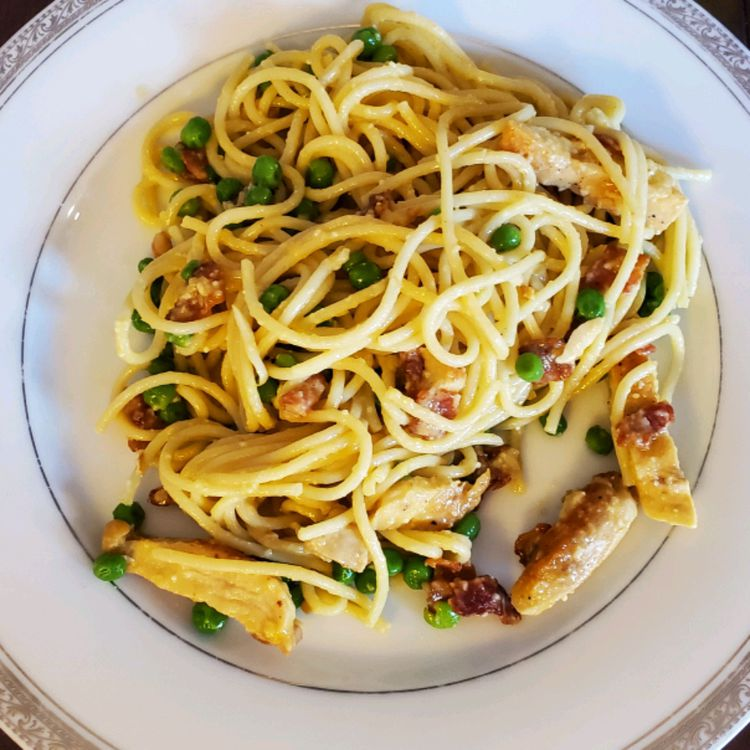

Loaded Chicken Carbonara

Description
When you're looking for an easy and delicious weeknight dinner it gets tough to beat just whipping up some pasta.
This dish takes the classic carbonara and adds a few extra ingredients to make it a little more filling and put a new spin on it.
Ingredients
- 6 slices bacon, chopped
- 1.5 pounds skinless, boneless chicken breast halves
- salt and ground black pepper to taste
- 3 cloves garlic
- 1 teaspoon ground black pepper
- 1/2 cup white wine
- 1.5 cups grated Parmesan cheese
- 3 large eggs
- 1 gallon water
- 1 pound spaghetti
- 2 cups frozen peas
Steps
- Cook the bacon in a large skillet over medium heat until crisp, about 10 minutes. Remove bacon from skillet with a slotted spoon and drain on a paper towel-lined plate. Drain fat from skillet, reserving 2 tablespoons of the bacon drippings.
- Season chicken with salt and pepper. Heat 1 tablespoon bacon drippings in the skillet over medium heat. Cook chicken breast halves in the bacon drippings until no longer pink in the center and the juices run clear, about 5 minutes per side. An instant-read thermometer inserted into the center should read at least 165 degrees F (74 degrees C). Transfer to cutting board and tent with foil. Rest chicken for 5 minutes before slicing; set aside.
- Heat remaining tablespoon bacon drippings in skillet over medium heat until shimmering. Cook and stir garlic and ground black pepper in skillet until fragrant, about 30 seconds. Pour wine into skillet; cook at a simmer until thickened, about 2 minutes. Remove from heat.
- Whisk Parmesan cheese and eggs together in a bowl. Slowly stream wine mixture into the Parmesan mixture while whisking continually.
- Bring a large pot of generously salted water to a boil. Cook spaghetti in the boiling water, stirring occasionally until cooked through but firm to the bite, about 12 minutes. Remove 1/2 cup of the water from the pot for later use.
- Put the peas in a large colander. Drain the pasta in the colander with the peas. Return drained pasta and peas to the pot. Stir bacon, chicken, and wine mixture into the spaghetti. Thin sauce with reserved pasta water as desired.